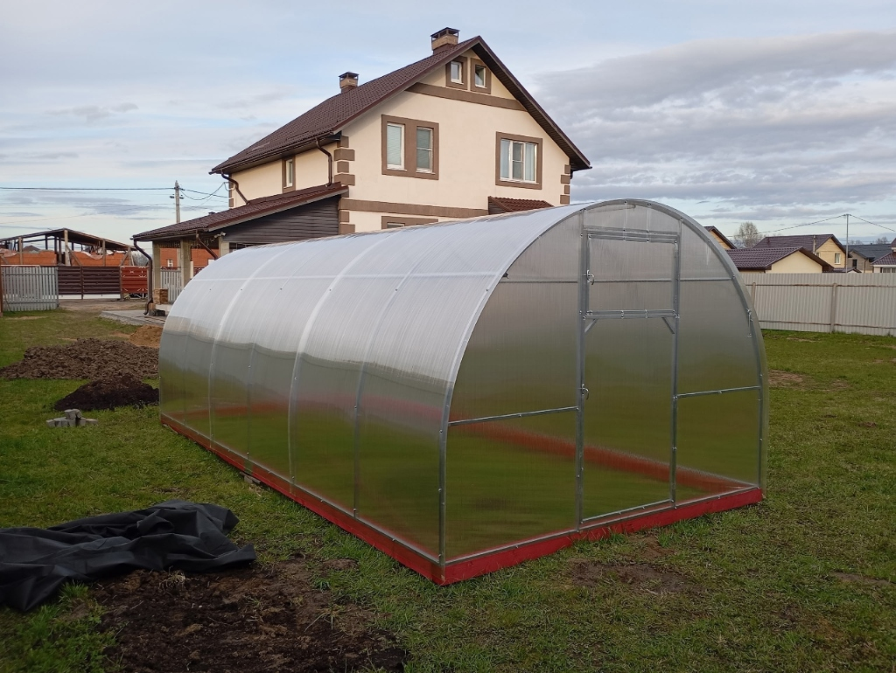
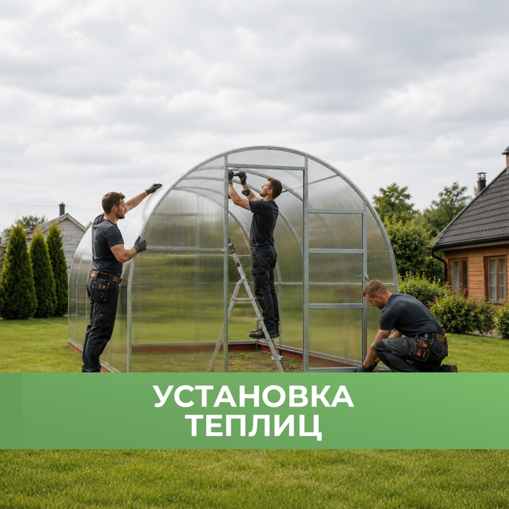
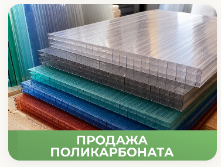
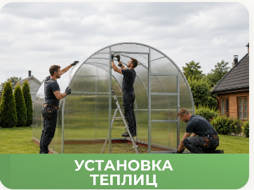
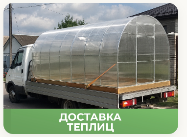
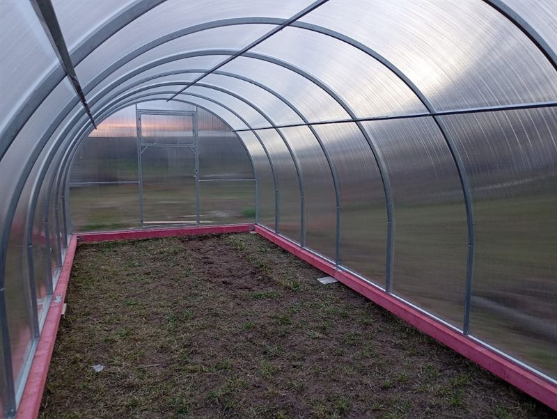
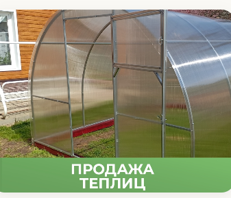
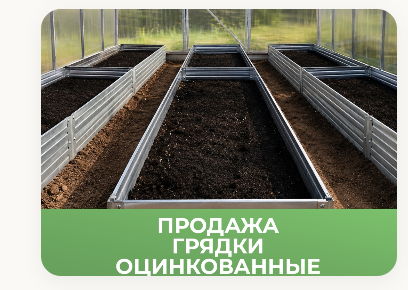
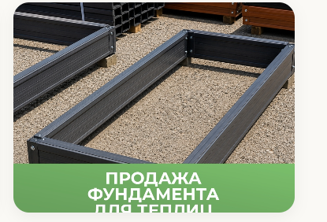
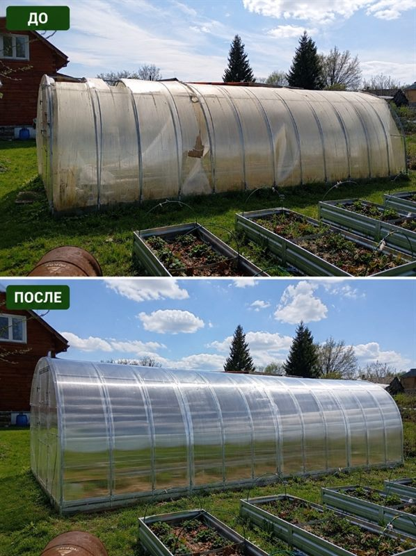

0 ₽ предоплаты
Мы уверены в надежности своего металла и поликарбоната: вы платите строго после осмотра!
- Доставка к вашей калитке в СНТ
- Личный осмотр дуг и поликарбоната
- Оплата водителю или бригаде по факту


Труба ГОСТ и оцинковка
Профиль 20×20 и 40×20 мм, горячий цинк 140 г/м² — каркас защищён от ржавчины на 15+ лет.

Усиленный шаг дуг 0.65 м
Выдерживает снег до 240 кг/м² — крыша не прогнется и не рухнет даже в самую снежную зиму.

Поликарбонат с УФ 50 мкм
Первичное сырьё Bayer: не мутнеет, спасает томаты от ожогов и держит крупный град.

Сборка под ключ за 3 часа
Опытные штатные монтажники завода. Сборка по лазерному уровню, сдача по акту.
ПОЧЕМУ МЫ?

Приоритет на Вас
- Удобная вам дата и время
- Любое размещение дверей
- Строго без скрытых доплат
Организация
- Контроль мастером завода
- Сборка за 3–4 часа
- Бережная спецдоставка на дачу

Качество
- Сталь Северсталь по ГОСТ
- Опыт производства 8+ лет
- Цельногнутые дуги 40×20

Гарантии
- Официальный договор с печатью
- Сдача по акту приема-сдачи
- Заводская гарантия 10 лет

Каждая деталь продумана до мелочей
Мы не экономим на металле и крепеже, поэтому наши конструкции служат десятилетиями без перекосов и протечек.

Оцинкованный каркас
Труба 40×20 и 20×20 мм, горячий цинк 140 г/м² со 100% защитой сварных швов изнутри и снаружи.
Лазерная УФ-защита
Сотовый поликарбонат со слоем светостабилизатора: защищает томаты от ожогов и держит крупный град.
Крепёж «Краб» X и T
Соединяет дуги в единой плоскости. Поликарбонат ложится монолитно без воздушных щелей и не хлопает.

Антисептированный брус
Хвойный брус 100×100 мм с трудновымываемой биозащитой — не гниет в сыром грунте и держит уровень.

Правильная вентиляция
2 широкие двери и 2 форточки в обоих торцах в базовой комплектации. Свободный сквозняк без фитофторы.
Поддержка завода
Склад запчастей в Ярославле. Докупить форточки или заказать перенос теплицы можно в любой момент.
В чем разница с дешевыми теплицами?
Почему покупка у случайных перекупщиков с рынка оборачивается сломанной теплицей в первую же зиму.
Кустарные теплицы с рынка
⚠️-
Требуют предоплату: берут деньги заранее и часто срывают сроки.
-
Тонкая труба 0.7 мм: прогибается руками и ржавеет по сварным швам.
-
Редкий шаг дуг 1 м: поликарбонат провисает корытом под мокрым снегом.
-
Дешевый поликарбонат: без УФ-слоя, желтеет за 2 года и бьется градом.
-
Случайные сборщики: собирают без уровня и не дают никаких гарантий.
Завод «Теплицы ТУТ»
Выбор 2 400+ садоводов-
0 ₽ предоплаты: расчет с водителем строго после выгрузки и проверки.
-
Труба ГОСТ Северсталь: профиль 20×20 и 40×20 мм, цинк 140 г/м² везде.
-
Усиленный шаг дуг 0.65 м: держит до 240 кг/м² — зимует без подпорок.
-
Поликарбонат Премиум: заводской УФ-слой 50 мкм, срок службы 10–12 лет.
-
Штатная бригада: русские мастера, сборка за 3–4 часа и гарантия 10 лет.